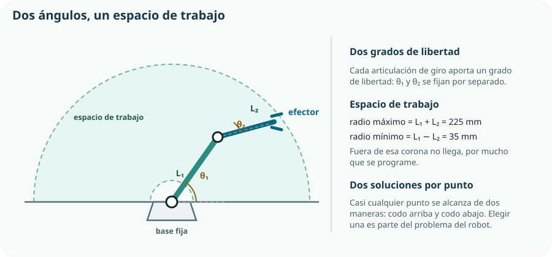

Este tema cierra el Bloque F con lo que el currículo llama robótica —modelización de movimientos y acciones mecánicas— y con la inteligencia artificial aplicada al control. Y lo hace con una advertencia de fondo: un robot no es un sistema nuevo, es el sistema del Tema 18 con más grados de libertad. Los mismos estados, los mismos enclavamientos y los mismos límites de seguridad, con la diferencia de que ahora el actuador puede alcanzar muchos sitios, y eso incluye los sitios donde no debe.
- definir robot y distinguirlo de un automatismo de un solo eje;
- contar los grados de libertad de un mecanismo y determinar su espacio de trabajo;
- explicar la diferencia entre modelo directo e inverso y por qué el inverso tiene varias soluciones;
- identificar los sensores y actuadores propios de un robot y su papel;
- programar algoritmos de desplazamiento, seguimiento y evitación de obstáculos;
- evaluar un robot por su repetibilidad, su exactitud y su seguridad;
- situar las tecnologías emergentes aplicadas al control y qué aporta cada una;
- explicar qué es el aprendizaje automático y cuándo mejora a un sistema de reglas;
- valorar los límites, los sesgos y la responsabilidad de un sistema que decide con datos.
1. Qué es un robot
Un robot es una máquina programable capaz de percibir su entorno, decidir y actuar sobre él, con varios grados de libertad. Las tres capacidades juntas —percibir, decidir, actuar— son la definición práctica, y la tercera palabra clave es programable: un mecanismo que hace siempre lo mismo no es un robot, es una máquina automática.
| Tipo | Característica | Ejemplo |
|---|---|---|
| Manipulador | Base fija y un brazo con varias articulaciones. | Brazo de soldadura, brazo educativo, el del huerto. |
| Móvil | Se desplaza: ruedas, orugas o patas. | Robot aspirador, vehículo guiado de almacén. |
| Cartesiano | Tres ejes perpendiculares de desplazamiento. | Impresora 3D, fresadora de control numérico. |
| Colaborativo | Diseñado para trabajar junto a personas, con detección de contacto. | Brazos de montaje ligero en línea de producción. |
| Aéreo o submarino | Se mueve en un medio fluido. | Dron de inspección, vehículo submarino. |
2. Grados de libertad y espacio de trabajo
Los grados de libertad son el número de movimientos independientes que puede realizar un mecanismo. Cada articulación motorizada aporta uno: un giro o un desplazamiento.

radio máximo = L1 + L2 · radio mínimo = |L1 − L2|
| Mecanismo | GDL | Qué puede hacer |
|---|---|---|
| Electroválvula del KR-1 | 1 | Abrir o cerrar. No es un robot. |
| Brazo plano de dos eslabones | 2 | Alcanzar cualquier punto de una corona en un plano. |
| Impresora 3D | 3 | Alcanzar cualquier punto de un volumen, sin orientar nada. |
| Brazo industrial típico | 6 | Alcanzar cualquier punto con cualquier orientación. |
| Robot móvil de dos ruedas | 2 motrices | Avanzar y girar; el plano completo, pero no lateralmente. |
3. Modelizar el movimiento
El currículo pide «modelización de movimientos y acciones mecánicas». Modelizar el movimiento de un robot es relacionar dos cosas: los ángulos de sus articulaciones y la posición de su efector. Se puede hacer en los dos sentidos, y no cuestan lo mismo.
Modelo directo
Conozco los ángulos y quiero saber dónde está el efector. Es trigonometría del Tema 9 y tiene una sola solución: dados θ₁ y θ₂, el extremo está donde está.
Modelo inverso
Conozco el punto al que quiero llegar y necesito los ángulos. Es el problema útil y el difícil: puede tener dos soluciones, infinitas o ninguna.
x = L1·cos θ1 + L2·cos(θ1 + θ2) modelo directo, coordenada horizontal
y = L1·sen θ1 + L2·sen(θ1 + θ2) modelo directo, coordenada vertical
import math
L1, L2 = 130.0, 95.0 # mm
def posicion_efector(t1_grados, t2_grados):
"""Modelo directo: de los ángulos a la posición del efector, en mm."""
t1 = math.radians(t1_grados)
t2 = math.radians(t2_grados)
x = L1 * math.cos(t1) + L2 * math.cos(t1 + t2)
y = L1 * math.sin(t1) + L2 * math.sin(t1 + t2)
return x, y
print(posicion_efector(55, -40)) # (166.8, 130.5)
def alcanzable(x, y):
"""Comprueba si un punto está dentro del espacio de trabajo."""
r = math.sqrt(x * x + y * y)
return abs(L1 - L2) <= r <= L1 + L2
print(alcanzable(200, 100)) # True
print(alcanzable(300, 0)) # False: fuera del radio máximo
print(alcanzable(10, 5)) # False: dentro del radio mínimoalcanzable() del código anterior es la comprobación de plausibilidad del Tema 18, aplicada a la geometría.4. Sensores y actuadores de un robot
| Elemento | Qué aporta | En un robot educativo |
|---|---|---|
| Final de carrera | Detecta el extremo del recorrido; sirve para el origen y como límite de seguridad. | Microinterruptor en cada eje. |
| Encóder | Mide el giro del eje: es la realimentación de posición del Tema 17. | Disco ranurado o encóder magnético en el motor. |
| Servomotor | Actuador con su propio lazo cerrado interno: se le pide un ángulo y lo mantiene. | El actuador habitual de un brazo educativo. |
| Motor paso a paso | Gira un ángulo exacto por impulso, sin necesitar sensor. | Ejes de una impresora 3D. |
| Sensor de distancia | Detecta obstáculos antes del contacto. | Ultrasonido o infrarrojo. |
| Sensor de contacto o fuerza | Detecta el choque o la presión ejercida. | Parachoques con microinterruptor. |
| Cámara | Permite visión artificial: reconocer y localizar objetos. | Módulo de cámara; es la puerta a la sección 8. |
5. Algoritmos de movimiento
El currículo pide algoritmos sencillos, y esa palabra hay que tomársela en serio: los algoritmos que siguen tienen pocas líneas y resuelven los problemas reales de un robot educativo.
Desplazamiento a un punto
def ir_a(x, y):
"""Lleva el efector a un punto, si es alcanzable."""
if not alcanzable(x, y):
registrar_evento("PUNTO_INALCANZABLE")
return False
t1, t2 = angulos_para(x, y, codo="arriba") # modelo inverso
if not (T1_MIN <= t1 <= T1_MAX and T2_MIN <= t2 <= T2_MAX):
registrar_evento("ANGULO_FUERA_DE_LIMITE")
return False
mover_articulaciones(t1, t2)
return TrueSeguimiento de línea
# Dos sensores infrarrojos apuntando al suelo
while True:
izq = sensor_izq.value() # 1 = ve línea oscura
der = sensor_der.value()
if izq and der:
avanzar() # la línea está centrada
elif izq and not der:
girar_izquierda() # se ha salido por la derecha
elif der and not izq:
girar_derecha()
else:
buscar_linea() # perdida: gira sobre sí mismo
time.sleep(0.02)Evitación de obstáculos
DISTANCIA_SEGURA_CM = 20
while True:
d = distancia_cm()
if d > DISTANCIA_SEGURA_CM:
avanzar()
else:
parar()
retroceder(0.3)
girar_derecha(0.5) # maniobra fija: sencilla y limitada
if choque.value() == 0: # el parachoques manda sobre todo
parar()
entrar_en_fallo("CHOQUE")
time.sleep(0.05)6. Simular y evaluar
Un robot mal programado rompe cosas, así que se simula antes. Y se evalúa después con dos magnitudes que no son lo mismo.
Repetibilidad
Cuánto se aproxima el robot a la misma posición al repetir la orden muchas veces. Es lo que más importa en producción, y es lo que arruina el juego mecánico del Tema 8.
Exactitud
Cuánto se aproxima a la posición pedida. Depende además de la calibración y de que las longitudes reales coincidan con las del modelo.
| Prueba | Cómo | Qué revela |
|---|---|---|
| Repetibilidad | Ir veinte veces al mismo punto desde direcciones distintas y medir la dispersión. | Juego mecánico y retroceso del Tema 8. |
| Exactitud | Ir a cinco puntos conocidos y medir la desviación. | Errores de calibración y de longitudes del modelo. |
| Límites de recorrido | Pedir un punto fuera del espacio de trabajo. | Que el programa lo rechaza en lugar de intentarlo. |
| Búsqueda de origen | Reiniciar en una posición cualquiera. | Que encuentra la referencia sin forzar nada. |
| Choque | Interponer un obstáculo blando a propósito. | Que se detiene y pasa a fallo. |
| Corte de alimentación | Desconectar durante un movimiento. | Qué hace el efector al caer: una pinza debería sujetar. |
7. Tecnologías emergentes aplicadas al control
El currículo pide la «aplicación de las tecnologías emergentes a los sistemas de control». Conviene ordenarlas, porque se nombran juntas y hacen cosas muy distintas.
| Tecnología | Qué aporta | En el KR-1 |
|---|---|---|
| Internet de las cosas | Vigilar y ajustar a distancia; reunir datos de muchos equipos. | Ya implementado en el Tema 16. |
| Big data | Encontrar patrones en históricos grandes que un ojo no ve. | Tres veranos de datos de varios bancales. |
| Aprendizaje automático | Deducir la regla de decisión a partir de ejemplos, en lugar de escribirla. | Predecir cuánto va a secarse mañana. Sección 8. |
| Visión artificial | Extraer información de imágenes: presencia, posición, estado. | Detectar si una planta está marchita antes de que el sensor lo note. |
| Gemelo digital | Un modelo del sistema que se alimenta de sus datos reales y permite ensayar cambios. | Probar un umbral nuevo sobre los datos del verano pasado antes de aplicarlo. |
| Computación en el borde | Decidir en el propio dispositivo en lugar de en la nube. | Es lo que ya hace: el riego no depende de la red. |
8. Inteligencia artificial aplicada al control
El contenido del currículo es preciso: inteligencia artificial aplicada a los sistemas de control. No es un panorama del campo —eso pertenece a 2.º de Bachillerato— sino una pregunta concreta: cuándo conviene que la regla de decisión se aprenda de los datos en lugar de escribirla.
Sistema de reglas
Alguien escribe la lógica: «si la humedad baja del 30 %, riega». Es explicable, comprobable y predecible, y es lo que hace el KR-1. Su límite aparece cuando la regla depende de demasiadas variables a la vez.
Aprendizaje automático
Se le dan ejemplos —situaciones con su resultado— y el sistema deduce la regla. Sirve cuando la relación existe pero nadie sabe escribirla. Su precio es que la regla obtenida es difícil de explicar.
if es añadir una caja negra a un problema resuelto.Un experimento honesto y hacible
Con el histórico del KR-1 se puede hacer aprendizaje automático de verdad, sin bibliotecas complicadas: predecir cuánto bajará la humedad mañana a partir de la temperatura máxima del día.
Del archivo del verano: para cada día, la temperatura máxima y la bajada de humedad observada. Son los pares de entrada y resultado.
Dos tercios de los días para ajustar el modelo y un tercio que el modelo no verá. Este paso es el que distingue un experimento de un autoengaño.
Una recta: bajada = a · temperatura + b. Es el modelo más simple posible y casi siempre el punto de partida correcto.
Con los días reservados: cuánto se equivoca de media. Un número, no una impresión.
Frente a «mañana bajará lo mismo que la media de todos los días». Si el modelo no gana a eso, no sirve.
Y si se usa, como consejo, no como orden: el umbral de seguridad sigue siendo el del Tema 18.
9. Límites, sesgos y responsabilidad
| Problema | En qué consiste | Ejemplo |
|---|---|---|
| Datos no representativos | El modelo solo ha visto una parte de la realidad. | Entrenado con un verano seco, falla el año que llueve. |
| Sobreajuste | Memoriza los ejemplos en lugar de aprender la relación. | Acierta el 100 % en los datos de entrenamiento y falla en los nuevos. |
| Correlación sin causa | Dos cosas van juntas sin que una provoque la otra. | «Riega más los martes»: es que el martes hay clase y alguien pisa el bancal. |
| Sesgo de los datos | Los datos arrastran un desequilibrio del mundo real y el modelo lo perpetúa. | Un sistema entrenado con decisiones humanas repite sus prejuicios. |
| Opacidad | El modelo acierta y nadie puede explicar por qué. | Imposible certificar; imposible depurar cuando falla. |
| Deriva | El mundo cambia y el modelo sigue igual. | La planta crece y consume más: el modelo del año pasado ya no vale. |
Comprueba lo que has aprendido
Este tema se demuestra con un mecanismo que se mueve donde debe, se detiene donde no debe, y con un experimento de datos honesto.
| Aspecto | Qué debes demostrar | Evidencias posibles |
|---|---|---|
| Grados de libertad | Que cuentas los GDL y calculas el espacio de trabajo de tu mecanismo. | Cálculo de los radios máximo y mínimo y comprobación de que la tarea cabe dentro. |
| Modelizar | Que implementas el modelo directo y compruebas la alcanzabilidad antes de mover. | Función de posición del efector contrastada con la medida real, y función alcanzable(). |
| Algoritmos | Que programas un desplazamiento, un seguimiento y una evitación con sus límites. | Los tres algoritmos funcionando, con el sensor de contacto por encima de la lógica normal. |
| Evaluar | Que distingues repetibilidad de exactitud y las mides. | Veinte repeticiones al mismo punto con su dispersión, y cinco puntos conocidos con su desviación. |
| Seguridad | Que el robot se detiene ante un obstáculo y nadie entra en su zona con el robot alimentado. | Plan de pruebas con las seis filas y el procedimiento de trabajo seguro escrito. |
| Datos e IA | Que haces un experimento con datos separados y lo comparas con la solución tonta. | Modelo ajustado, error medido sobre datos no vistos, comparación con la media y decisión razonada. |
| Responsabilidad | Que identificas los límites y los riesgos de tu propio sistema. | Apartado de la memoria con los sesgos posibles, quién responde y cómo se desactiva. |
Cierre del Bloque F: el KR-1 ya es un sistema automático, supervisado y documentado. Solo queda la pregunta que lo justifica todo, y es el Bloque G: cuánta agua y cuánta energía ahorra de verdad.
Glosario del tema
- Aprendizaje automático
- Técnica por la que un sistema deduce una regla de decisión a partir de ejemplos, en lugar de recibirla escrita.
- Búsqueda de origen
- Maniobra inicial en la que cada eje busca su final de carrera para establecer una referencia de posición.
- Computación en el borde
- Procesamiento de los datos en el propio dispositivo en lugar de en un servidor remoto.
- Configuración
- Cada una de las combinaciones de ángulos con las que un robot alcanza el mismo punto.
- Deriva
- Pérdida de validez de un modelo porque el proceso que describe ha cambiado.
- Efector
- Elemento terminal de un robot que realiza la tarea: pinza, herramienta o útil.
- Encóder
- Sensor que mide el giro de un eje; realimenta la posición al controlador.
- Espacio de trabajo
- Conjunto de puntos que el efector puede alcanzar.
- Exactitud
- Proximidad entre la posición alcanzada y la posición pedida.
- Gemelo digital
- Modelo del sistema alimentado con sus datos reales, que permite ensayar cambios sin tocarlo.
- Grado de libertad
- Movimiento independiente que puede realizar un mecanismo; cada articulación motorizada aporta uno.
- Modelo directo
- Cálculo de la posición del efector a partir de los ángulos de las articulaciones; tiene solución única.
- Modelo inverso
- Cálculo de los ángulos necesarios para alcanzar una posición; puede tener dos soluciones, infinitas o ninguna.
- Redundante
- Robot con más grados de libertad de los estrictamente necesarios para su tarea.
- Repetibilidad
- Dispersión de las posiciones alcanzadas al repetir muchas veces la misma orden.
- Servomotor
- Actuador con lazo cerrado interno al que se le ordena un ángulo y lo mantiene.
- Sesgo
- Desequilibrio presente en los datos que el modelo aprende y reproduce.
- Sobreajuste
- Situación en la que un modelo memoriza los ejemplos de entrenamiento y falla con datos nuevos.
- Visión artificial
- Extracción de información útil a partir de imágenes.
Resumen esencial
- Un robot percibe, decide y actúa, es programable y tiene varios grados de libertad; una impresora 3D cumple la definición.
- La estructura de un robot es la del Tema 7 repetida por articulación, con un efector intercambiable y un bastidor decisivo.
- Cada articulación motorizada aporta un grado de libertad; hacen falta seis para situar un objeto con cualquier orientación.
- El espacio de trabajo de un brazo de dos eslabones es una corona, y ni su centro ni su exterior se alcanzan por mucho que se programe.
- El modelo directo tiene solución única; el modelo inverso puede tener dos soluciones, infinitas o ninguna.
- Elegir entre codo arriba y codo abajo es un problema de ingeniería, no de matemáticas.
- Antes de mover hay que comprobar que el punto es alcanzable y que los ángulos están dentro de los límites mecánicos.
- Un servomotor es un lazo cerrado encapsulado: si la carga excede su par, forzará hasta destruirse.
- Un encóder mide incrementos, así que todo robot empieza buscando su origen con los finales de carrera.
- Un seguidor de línea es un control todo-nada, con su zigzag característico; el control proporcional lo elimina.
- El sensor de contacto tiene prioridad sobre el de distancia, porque los ultrasonidos tienen puntos ciegos conocidos.
- Repetibilidad y exactitud no son lo mismo: primero se resuelve la repetibilidad, que es mecánica, y después la exactitud, que es calibración.
- Nadie entra en el espacio de trabajo con el robot alimentado.
- El gemelo digital permite evaluar un cambio de umbral sobre datos reales sin esperar un verano.
- Si puedes escribir la regla, escríbela: el aprendizaje automático solo tiene sentido cuando la relación existe y nadie sabe formularla.
- Los dos pasos que se saltan en todo experimento con datos son separar los datos de prueba y comparar con la solución más tonta.
- El control determinista va abajo con sus enclavamientos, y la optimización aprendida por encima: las protecciones no dependen de lo que no se puede explicar.
- «Lo decidió el algoritmo» no es una explicación: alguien eligió los datos, el modelo y el umbral, y alguien responde.
Fuentes y recursos fiables
- [1] UNE — Asociación Española de Normalización. Seguridad de robots industriales y robots colaborativos (serie UNE-EN ISO 10218).
- [2] MicroPython — Referencia rápida del ESP32 (en inglés). Control de servomotores con PWM.
- [3] Wokwi. Simulación de servomotores, ultrasonidos y sensores infrarrojos con ESP32.
- [4] GeoGebra. Construcción del espacio de trabajo y del modelo directo de un brazo de dos eslabones.
- [5] Comisión Europea — Marco regulador de la inteligencia artificial (en español). Requisitos de transparencia, supervisión humana y gestión de riesgos.
- [6] Agencia Española de Protección de Datos. Decisiones automatizadas y datos personales.
- [7] Decreto 64/2022, de 20 de julio (BOCM). Currículo de Tecnología e Ingeniería I, bloque F: robótica e inteligencia artificial aplicada a los sistemas de control.